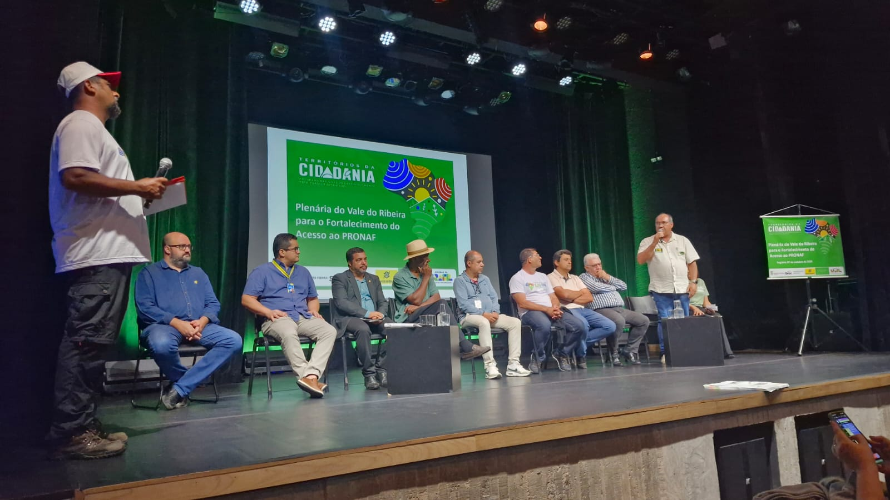
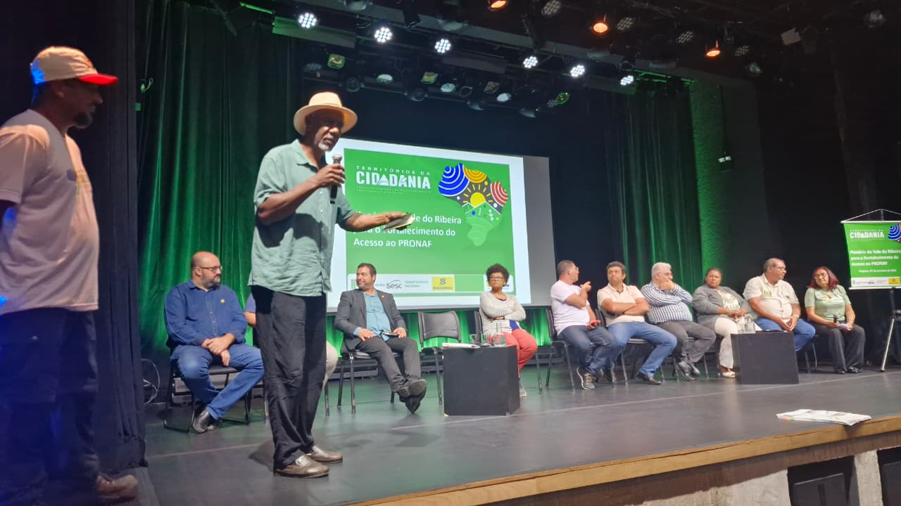

Política Nacional de Desenvolvimento Territorial Sustentável — acompanhe as ações, projetos e resultados nos territórios rurais do Brasil.
Brasília, abril de 2026
Nota Editorial
Este informativo nasceu para a gente ficar mais perto. Queremos contar tudo o que está rolando nos Territórios da Cidadania, fortalecendo a ponte entre quem vive no campo e quem faz a gestão pública. É com esse espírito de união que chegamos a 2026: o ano em que o PNDTS vira a peça-chave para transformar a vida no interior.
Linha do Tempo
Evolução Histórica do PNDTS
Da origem à consolidação nacional
2016
Origem
243 territórios originais em situação de inação
2024
Retomada
Reestruturação pelo MDA/SFDT, Resolução CONDRAF nº 16/2024
2025
Institucionalização
Portaria MDA nº 35 — 16 de setembro de 2025
2026
Consolidação
O PNDTS vira peça-chave para a transformação nacional
Destaque
2026: O Ano da Consolidação
Política Nacional de Desenvolvimento Territorial Sustentável
O que é o PNDTS?
Retomado pelo MDA/SFDT em 2024, o programa reconhece o território como unidade central de planejamento, articulando políticas públicas para a agricultura familiar, povos tradicionais e redução das desigualdades no campo. Fortalecendo a ponte entre quem vive no campo e quem faz a gestão pública — juntando o conhecimento da ciência, a boa gestão e a realidade de cada lugar.
Alimentos saudáveis Produção de base agroecológica e soberania alimentar
Adaptação às mudanças climáticas Resiliência e sustentabilidade nos territórios rurais
Redução da pobreza rural Inclusão produtiva e geração de renda no campo
Ampliação do acesso a políticas públicas PRONAF, ATER, PAA, PNAE e Plano Safra nos territórios
Promoção do bem viver no campo Qualidade de vida, cultura e identidade territorial
Estratégia
Os 3 Eixos Prioritários
Territórios
Governança e Decisão — fortalecimento da governança local liderada pelos CODETERs
Conectividade
Inclusão Digital — ampliação do acesso digital e tecnológico nas comunidades rurais
Educação do Campo
Identidade e Cultura — valorização dos saberes tradicionais e modos de vida rurais
Ecossistema
Políticas Articuladas no Território
Unidade Central de PlanejamentoO Território
CréditoPRONAF
Assistência TécnicaATER
Reforma AgráriaRegularização Fundiária
Compras PúblicasPAA / PNAE
Comercialização
Energias Renováveis
Associativismo e Cooperativismo
Governança
CPDT — Comitê Permanente de Desenvolvimento Territorial
A instância estratégica vinculada ao CONDRAF que transforma leis em ações práticas
50% Governo
MDA/SFDT, órgãos federais e Superintendências Estaduais do MDA.
50% Sociedade Civil
Movimentos sociais, agricultores familiares e comunidades tradicionais. Composição paritária garantida.

Plenária do Vale do Ribeira para o Fortalecimento do Acesso ao PRONAF — Territórios da Cidadania
Dados
O Impacto em Números
185
Territórios homologados (2025)
76%
Taxa de revalidação nacional
109
Territórios no Nordeste (59%)
3.016
Municípios integrados
18,7M
Habitantes rurais abrangidos
243
Territórios originais (2016)
Projetos
Projetos CNPq / PAS Nordeste
Chamada 17/2025
A Chamada CNPq 17/2025, coordenada pela Secretaria-Geral da Presidência da República no âmbito do PAS Nordeste, aprovou 53 projetos de pesquisa e extensão em participação social nos territórios do Nordeste. Projetos articulam formação política, capacitação técnica e intervenção direta.
Projetos por Estado
Bahia
18
Maranhão
8
Ceará
6
Rio Grande do Norte
5
Paraíba
4
Piauí
4
Alagoas
3
Pernambuco
3
Sergipe
2
TOTAL53
Bahia — 18 projetos
Maior concentração do Nordeste
SEAFS, fortalecimento de Quilombos e CODETERs, articulação com PAA/PNAE no semiárido baiano.
Maranhão — 8 projetos
Extensão e povos tradicionais
Quebradeiras de Babaçu, Hortas Mandala e Irrigação Automatizada para comunidades tradicionais.
CE / RN / PB / PI — 19 projetos
Semiárido e convivência
Escolas de Campo, Quintais Produtivos, Banco de Sementes e Inteligência Territorial.
AL / PE / SE — 8 projetos
Articulação territorial
Maricultura, Saberes Tradicionais e Monitoramento Ambiental nos territórios do litoral e agreste.
PNDTSPAS NordesteCNPqExtensão RuralCODETERs
Temáticas
Áreas de Atuação do PAS
Agroecologia & Soberania Alimentar
Protagonismo Feminino
Tecnologias Sociais
Educação Popular
Inteligência Conectada
Linha 4: Articulação em Rede
Conectando a experiência local a uma agenda nacional de pesquisa e extensão
Plataforma Digital de Integração
Unindo inovação tecnológica universitária com a gestão pública na ponta dos territórios.
Círculos de Escuta Territorial
Espaços de diálogo direto com lideranças e comunidades para escuta ativa das demandas locais.
Diálogo Institucional (FORPROEX)
Articulação com o Fórum de Pró-Reitores de Extensão das Universidades Públicas Brasileiras.
Produção Acadêmica Compartilhada
Pesquisa aplicada com resultados acessíveis aos territórios e às políticas públicas.
TED: O Motor de Planejamento Territorial
Termo de Execução Descentralizada entre MDA e UnB (Cegafi/PCTec) para diagnósticos e planos territoriais participativos. Ferramentas: SIT + Colheita Digital.
R$ 12,4M
Investimento Total
174
Territórios Atendidos
6
Metas de Execução
SIT
+ Colheita Digital

Liderança discursa durante a Plenária Territorial — fortalecimento do acesso ao PRONAF
Vozes do Campo
Quem Faz o Território
"O território é onde a gente vive, planta, cria os filhos. O CODETER nos deu voz pra dizer o que a gente precisa de verdade. Agora a gente participa das decisões que mudam a nossa vida."
Liderança comunitária do CODETER
Representante da Sociedade Civil — Território Rural do Nordeste
Próximos Eventos
Agenda Territorial
15Mai
Reunião Nacional dos CODETERs
Brasília/DF — Plenário do CONDRAF
Presencial
22Mai
Prazo — Chamada CNPq 18/2026
Submissão de projetos de extensão territorial
Online
30Mai
Webinar: Colheita Digital
Resultados parciais do SIT nos territórios
Online
Participe
Seu Papel no Território
Lideranças e CODETERs
Engaje-se nas reuniões do colegiado local. Acesse o SIT (territoriosdacidadania.mda.gov.br).
Pesquisadores e Universidades
Acompanhe as chamadas do CNPq e projetos TED vinculados ao PAS Nordeste e PNDTS.
Gestores Públicos e Técnicos
Fortaleça a execução de políticas chave (PAA, PNAE, ATER, Plano Safra) na agenda do seu território.